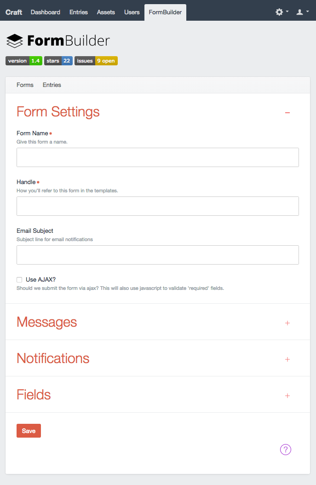
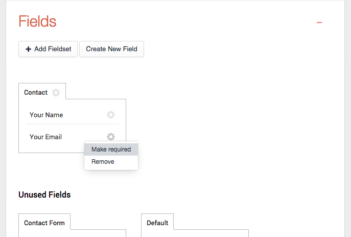

FormBuilder is a Craft CMS plugin that lets you create forms for your front-end. Each form can have submission notification sent to form admin as well as submitter. All submission entries are saved to the database. You can easily view/update forms from the plugin's control panel. Form entries are also displayed on the plugin's entries page. You can view submissions and delete them if you want.
1 Download the plugin from github git@github.com:roundhouse/FormBuilder-Craft-CMS.git
2 Rename the folder to FormBuilder and place it into your Craft CMS Plugin directory.
3 Navigate to your plugins page /settings/plugins and click Install
4 New menu will appear in your toolbar called FormBuilder.
1 Got to Settings->Fields and hit "+ New Field"
2 Fill out the field's information. Make sure to use | FormBuilder | fields only
1 Go back to FormBuilder forms page and hit "+ New Form"
Save! Now your form is ready for use. Take note of the form Handle, we will use that in the next steps to display our Subscription Form.
Line 8 Enter form handle name here.
{#
# Contact Form Sample Code
# ------------------------
#}
{% extends "_layout" %}
{% set form = craft.formBuilder.getFormByHandle('ENTER YOUR FORM HANDLE HERE') %}
{% set tabs = form.fieldLayout.getFieldLayout().getTabs() %}
{% set pluginScripts = craft.formBuilder.pluginScripts(form) %}
{% block content %}
{{ entry.title }}
{% endblock %}
Thats it, your form should now render with your fields.
If you want to make required fields you can do that by clicking on the "cog" icon in the Fields section. See screenshot. This will add HTML5 "required" attribute to the input field. If your form uses Ajax to post submissions, javascript will validate those fields (using Parsleyjs).
